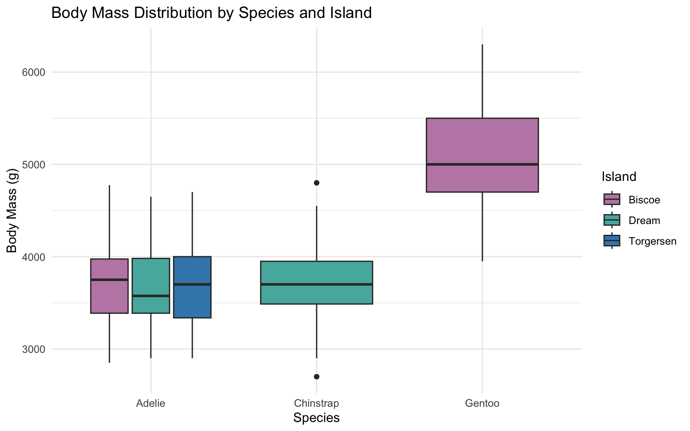
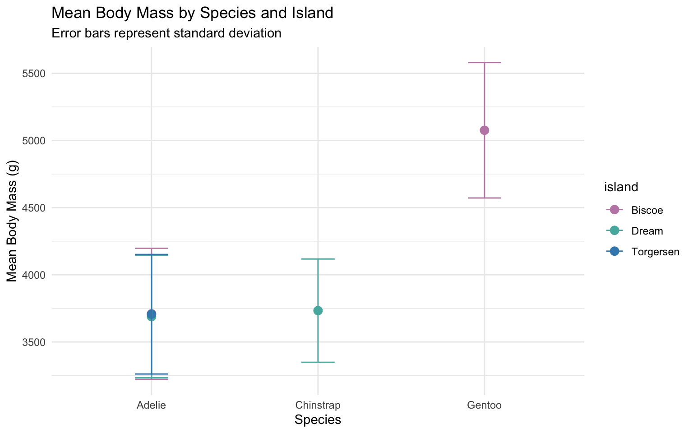
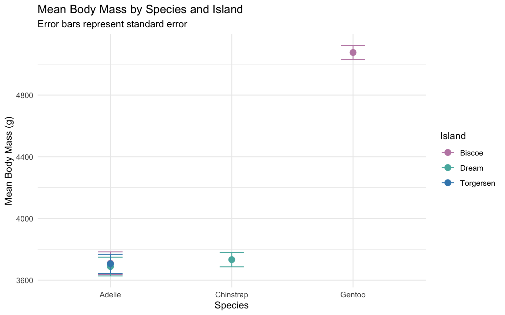

Code
# Pipe data to group_by() and summarise() to calculate the mean body mass for each species and island
island_species_summary <- penguins %>%
group_by(species, island) %>%
summarise(
mean_mass_g = mean(body_mass_g, na.rm = TRUE)
)Wrangling and Plotting
This workshop introduced data wrangling, summarisation and visualisation in R using the Palmer Penguins dataset. The analysis explores differences in body mass between penguin species and islands and compares different ways of representing variation and uncertainty in the data.
The table below summarises the mean body mass recorded for each species and island combination.
# Pipe data to group_by() and summarise() to calculate the mean body mass for each species and island
island_species_summary <- penguins %>%
group_by(species, island) %>%
summarise(
mean_mass_g = mean(body_mass_g, na.rm = TRUE)
)island_species_summary |>
knitr::kable(
col.names = c(
"Species",
"Island",
"Mean Body Mass (g)"
),
digits = 1,
caption = "Mean body mass by species and island."
)| Species | Island | Mean Body Mass (g) |
|---|---|---|
| Adelie | Biscoe | 3709.7 |
| Adelie | Dream | 3688.4 |
| Adelie | Torgersen | 3706.4 |
| Chinstrap | Dream | 3733.1 |
| Gentoo | Biscoe | 5076.0 |
Body mass varied between the three penguin species and across the islands where they were sampled.
# Pipe the same dataset into ggplot() to create a boxplot of body_mass_g by species, with the island variable mapped to fill or facet_wrap().
body_mass_distrib <- ggplot(penguins, aes(x = species, y = body_mass_g, fill = island)) +
geom_boxplot() +
scale_fill_manual(values = c("#C089B2", "#56B4AD", "#3E88BA")) +
labs(
title = "Body Mass Distribution by Species and Island",
x = "Species",
y = "Body Mass (g)",
fill = "Island"
) +
theme_minimal()
body_mass_distrib
Standard deviation shows the variation in body mass among individual penguins within each species and island group.
# Pipe directly from aggregation to plotting with error bars
mass_compare_plot <- penguins |>
group_by(species, island) |>
summarise(
mean_mass = mean(body_mass_g, na.rm = TRUE),
sd_mass = sd(body_mass_g, na.rm = TRUE),
n = n(),
.groups = "drop"
) |>
ggplot(aes(x = species, y = mean_mass, colour = island)) +
geom_point(size = 3) +
geom_errorbar(aes(ymin = mean_mass - sd_mass,
ymax = mean_mass + sd_mass),
width = 0.2) +
scale_colour_manual(values = c("#C089B2", "#56B4AD", "#3E88BA")) +
labs(title = "Mean Body Mass by Species and Island",
subtitle = "Error bars represent standard deviation",
y = "Mean Body Mass (g)",
x = "Species") +
theme_minimal()
mass_compare_plot
Standard error was calculated by dividing the standard deviation by the square root of the sample size. This provides an indication of the precision of the estimated group means.
mass_summary <- penguins |>
group_by(species, island) |>
summarise(
mean_mass = mean(body_mass_g, na.rm = TRUE),
sd_mass = sd(body_mass_g, na.rm = TRUE),
n = n(),
.groups = "drop"
) |>
mutate(
se_mass = sd_mass / sqrt(n)
) mass_summary |>
mutate(
mean_mass = round(mean_mass, 1),
sd_mass = round(sd_mass, 1),
se_mass = round(se_mass, 1)
) |>
knitr::kable(
col.names = c(
"Species",
"Island",
"Mean Mass (g)",
"SD (g)",
"Sample Size",
"SE (g)"
),
caption = "Summary of body mass and uncertainty by species and island."
)| Species | Island | Mean Mass (g) | SD (g) | Sample Size | SE (g) |
|---|---|---|---|---|---|
| Adelie | Biscoe | 3709.7 | 487.7 | 44 | 73.5 |
| Adelie | Dream | 3688.4 | 455.1 | 56 | 60.8 |
| Adelie | Torgersen | 3706.4 | 445.1 | 52 | 61.7 |
| Chinstrap | Dream | 3733.1 | 384.3 | 68 | 46.6 |
| Gentoo | Biscoe | 5076.0 | 504.1 | 124 | 45.3 |
mass_compare_se_plot <- mass_summary |>
ggplot(aes(
x = species,
y = mean_mass,
colour = island
)) +
geom_point(size = 3) +
geom_errorbar(
aes(
ymin = mean_mass - se_mass,
ymax = mean_mass + se_mass
),
width = 0.2
) +
scale_colour_manual(
values = c("#C089B2", "#56B4AD", "#3E88BA")
) +
labs(
title = "Mean Body Mass by Species and Island",
subtitle = "Error bars represent standard error",
y = "Mean Body Mass (g)",
x = "Species",
colour = "Island"
) +
theme_minimal()
mass_compare_se_plot
It seems that Gentoo penguins have a much higher average body mass than Adelie and Chinstrap penguins. Adelie and Chinstrap are more similar in their average body mass. When standard deviation is used, the error bars are quite large, showing a fair amount of variation between individual penguins. When standard error is used instead, the error bars become much smaller. This makes the differences between the species easier to see and suggests that we can be quite confident in the estimated mean body masses. Overall, species seems to be an important factor in the differences in penguin body mass.
During this workshop I found that writing the code manually made me pay more attention to what each function was actually doing, instead of just focusing on getting the final output. I also became more comfortable reading error messages and checking the structure of my data when something did not work. There were many times I wanted to ask for help, but I really forced myself to properly investigate it first. While scary, it made me much more comfortable using R and felt like I was solving a puzzle. Working with both data frames and tibbles helped me understand some of the differences in how R displays and handles data. I found some parts challenging, particularly when dealing with missing values and building plots in layers, but working through these problems helped me better understand the steps involved in data wrangling and visualisation. I didn’t mind that AI was turned off for this phase considering I am still getting used to it, so it wasn’t really an adjustment.